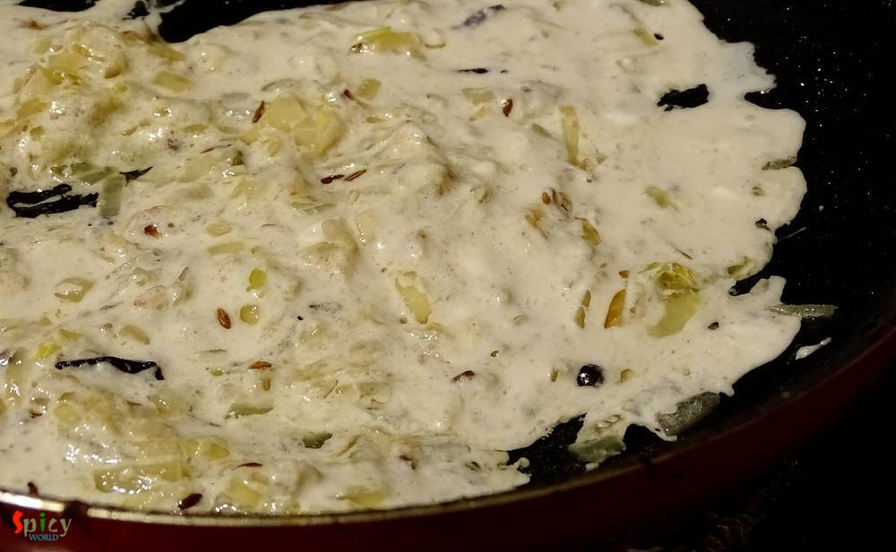

Simple and Easy Recipes
Sahi Paneer Korma / Paneer cooked in creamy nut based sauce
© 2016 Spicy World, Published on: Mar 30, 2016
I have not grown up too much of eating 'paneer' rather I grew up eating fish, chicken, rice, dal and vegetable dishes. I ate paneer in parties and very few times in restaurants. But after coming to US I learned how to make paneer at home and trust me, those self made soft white cubes gave me immense happiness. So, after that day we both have become paneer lover and have tried several dishes. This 'sahi paneer korma' is another rich mughlai dish from Indian cuisine. In this dish the lightly fried paneer is cooked in a creamy nut based gravy which tastes heavenly with plain chapati or naan or pulao. Try this in your kitchen and enjoy a lovely dinner with your loved ones.

Ingredients
- 10-15 paneer cubes.
- 1 small onion, finely chopped.
- 1 Teaspoon of ginger and garlic paste.
- 10 cashew nuts.
- 2 Tablespoons of poppy seeds / 10 almonds.
- 2 Tablespoons of curd.
- Whole spices (1 Teaspoon of cumin seeds, 4 cloves, 3 green cardamom, 5 black peppercorns, 1 very small cinnamon stick).
- Salt and sugar.
- 2 Teaspoons of black pepper powder.
- 1 Teaspoon of garam masala.
- 3 Tablespoons of heavy cream.
- 2 Tablespoons of oil 1 Teaspoon of ghee.
- 2-3 drops of kewra water / rose water.
- Half cup of full fat milk.
- Warm water.

Steps
Soak the cashew nuts and almonds / poppy seeds in some milk / water for 2 hours. Then grind them to a smooth paste and keep aside.
Heat the oil in a pan. Very lightly fry the paneer cubes in oil and then immediately soak the fried paneer cubes in some water.
In the remaining oil add the ghee / clarified butter.
Add the whole spices into the hot oil. Saute for few seconds.
Then add chopped onion. Fry till they become translucent. Do not make them golden.
Beat the curd with 2-3 Tablespoons of that white paste and 2-3 Teaspoons of milk very well.
Lower the heat for a minute and then add the curd mixture. Stir immediately to prevent the curd curdling.
Cook this in slow flame until the oil separates.
Now add salt, 2 Teaspoons of sugar, black pepper powder and garam masala. Mix well for 2 minutes.
Mix 1/4th cup of water with 3 Tablespoons of milk and add it to the pan. Stir well and cook for 10 minutes.
Then add the fried and soaked paneer. Mix well and cook for 5 minutes.
Lastly add cream and kewra water or rose water. Simmer for a minute and turn off the heat.
Let the curry rest for few minutes and then serve.
Your sahi paneer korma is ready.
Serve this hot with some roti, naan or pulao.
")